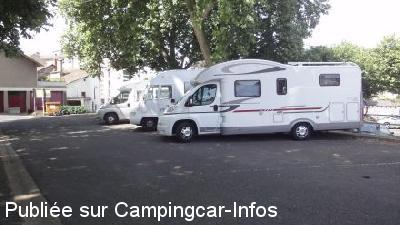
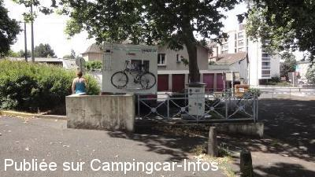
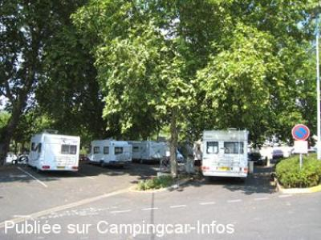
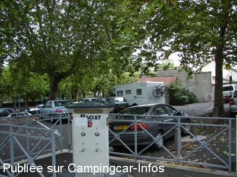

ASN = Aire de services avec stationnement nuit possible de :
AURILLAC
(N° 323)
Accès/adresse :
Rue du Puy Courny
Champ de foire
15000 AURILLAC
Champ de foire
15000 AURILLAC
Latitude : (Nord) 44.92917° Décimaux ou 44° 55′ 45′′
Longitude : (Est) 2.44973° Décimaux ou 2° 26′ 59′′
Tarif : 2012
Stationnement gratuit
Services : 3,50 €
Paiement par jetons
Type de borne : RACLET
Services :


Commerces
Autres informations :
Ouverte toute l'année
Excepté pendant le Festival mi-août
9 emplacements
Tél Office du Tourisme :
+33(0)471 484 658
http://www.tourisme.fr/office-de-tourisme/aurillac.htm

Le 23/07/2012 par JPB 73

Le 23/07/2012 par JPB 73

Le 06/09/2007 par Bernard.

Le 03/10/2005 par J. Alexandre 09-2005
de
Christian 46000 ( lot)
le 15/04/2014 :
bonjour
de passage le 10 avril 2014 pour passer la nuit pas possible sur 10 places pour camping car environ 3 de bien complet le reste crottes de corneilles ne pas se mettre dessous sinon bingo tout crotté nous avons dormis a st mamet
bonjour
de passage le 10 avril 2014 pour passer la nuit pas possible sur 10 places pour camping car environ 3 de bien complet le reste crottes de corneilles ne pas se mettre dessous sinon bingo tout crotté nous avons dormis a st mamet
de
putois49
le 01/04/2013 :
passé nuit du 28 février 2013. Une horreur !!!Musique et hurlements jusqu'à 3 H du matin. On peut dormir quelques heures avant l'arrivée massive des corneilles qui sonnent le rassemblement dans les arbres au dessus du parking !!!
passé nuit du 28 février 2013. Une horreur !!!Musique et hurlements jusqu'à 3 H du matin. On peut dormir quelques heures avant l'arrivée massive des corneilles qui sonnent le rassemblement dans les arbres au dessus du parking !!!
de
Claire70
le 24/07/2011 :
Nous avons visité Aurillac le 20 juillet et profité de cette air y stationner. Par contre nous n'y avons pas dormi car la nuit précédente des camping cariste ont eu des problèmes. Porte fracturée et pare brise cassé.
Nous avons visité Aurillac le 20 juillet et profité de cette air y stationner. Par contre nous n'y avons pas dormi car la nuit précédente des camping cariste ont eu des problèmes. Porte fracturée et pare brise cassé.
de
Bernard TARTOIS
le 06/09/2007 :
Le stationnement et les vidanges sont gratuits. Un jeton est nécessaire pour l'eau. Si beaucoup s'accordent à dire que ce n'est pas un endroit idéal pour passer la nuit car elle est encadrée par deux discothèques, c'est un excellent point de départ vour la visite de la vieille ville.
Elle se trouve à une centaine de mètres du Pont Rouge qui permet d'avoir de jolies vues sur les maisons à balcons de bois qui bordent la rivière.
La HomePage des Voyages en camping-car
http://perso.wanadoo.fr/bernard.tartois
Le stationnement et les vidanges sont gratuits. Un jeton est nécessaire pour l'eau. Si beaucoup s'accordent à dire que ce n'est pas un endroit idéal pour passer la nuit car elle est encadrée par deux discothèques, c'est un excellent point de départ vour la visite de la vieille ville.
Elle se trouve à une centaine de mètres du Pont Rouge qui permet d'avoir de jolies vues sur les maisons à balcons de bois qui bordent la rivière.
La HomePage des Voyages en camping-car
http://perso.wanadoo.fr/bernard.tartois
de
bouquet
le 07/05/2007 :
Merci à la ville d'Aurillac pour ces places réservées aux CC, pratique pour visiter la ville mais très bruyant la nuit.
Merci à la ville d'Aurillac pour ces places réservées aux CC, pratique pour visiter la ville mais très bruyant la nuit.
de
Esther
le 19/03/2007 :
Traduction du commentaire rédigé en anglais le 18/03/2007 par Robbie.
J'étais ici le 15/03/07, très difficile de trouver de la place, très bruyant et disco jusqu'à 03H00 du matin, je ne reviendrai jamais.
Traduction du commentaire rédigé en anglais le 18/03/2007 par Robbie.
J'étais ici le 15/03/07, très difficile de trouver de la place, très bruyant et disco jusqu'à 03H00 du matin, je ne reviendrai jamais.
de
robbie
le 18/03/2007 :
was here 15/03/07 very difficult to get in place ,very noisy and disco going on till 03.00 am ,never go there again
was here 15/03/07 very difficult to get in place ,very noisy and disco going on till 03.00 am ,never go there again
de
aplm
le 20/08/2006 :
Merci à la municipalité pour cette aire en plein centre ville. Mais peut-être aurait-il été judicieux de nous préciser que nous étions placés entre 2 boites de nuit. En effet, va et vient de jeunes, non silencieux et quelque peu émêchés, entre les 2 établissements. Quant à la musique, cela reste sans commentaire. Plusieurs CC ont été amenés à se déplacer en pleine nuit. Sur les 7 garés en début de soirée, quand nous sommes partis, il n'en restait que 3. Heureusement pour nous, nous avions encore ce choix, mais que dire des voisins de ces 2 établissements, qui n'ont pas la même possibilité de déplacement que nous ?
Merci à la municipalité pour cette aire en plein centre ville. Mais peut-être aurait-il été judicieux de nous préciser que nous étions placés entre 2 boites de nuit. En effet, va et vient de jeunes, non silencieux et quelque peu émêchés, entre les 2 établissements. Quant à la musique, cela reste sans commentaire. Plusieurs CC ont été amenés à se déplacer en pleine nuit. Sur les 7 garés en début de soirée, quand nous sommes partis, il n'en restait que 3. Heureusement pour nous, nous avions encore ce choix, mais que dire des voisins de ces 2 établissements, qui n'ont pas la même possibilité de déplacement que nous ?
de
Petat jp
le 25/06/2006 :
Centre ville en travaux, emplacements neutralisés.
Centre ville en travaux, emplacements neutralisés.
de
aplm
le 01/11/2005 :
J'ai constaté que l'électricité est gratuite, l'eau est payante, mais pas celle distribuée au rinçage, et les WC publics sont en contre bas.
Nuit calme malgré la situation de l'aire. Merci à la municipalité de nous recevoir dans de bonnes conditions : pas loin du centre ville et des commerces.
J'ai constaté que l'électricité est gratuite, l'eau est payante, mais pas celle distribuée au rinçage, et les WC publics sont en contre bas.
Nuit calme malgré la situation de l'aire. Merci à la municipalité de nous recevoir dans de bonnes conditions : pas loin du centre ville et des commerces.
de
Challenger105
le 25/10/2005 :
Parking, services et 230v gratuits. Pas de WC publics mais ville vraiment agréable à voir. 8 Emplacements.
Parking, services et 230v gratuits. Pas de WC publics mais ville vraiment agréable à voir. 8 Emplacements.